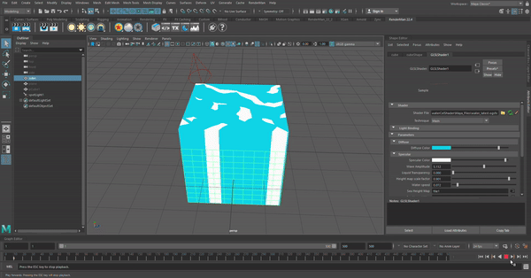
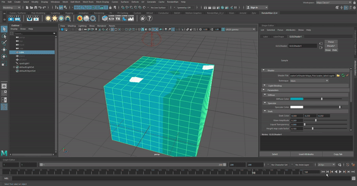
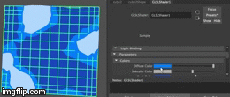
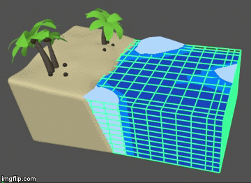
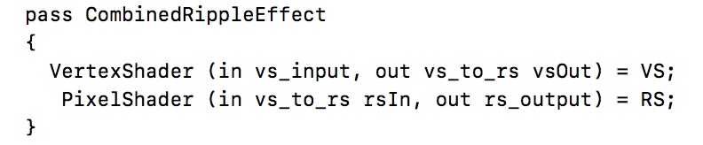
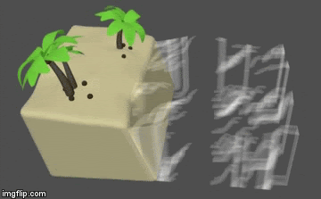
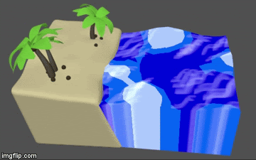
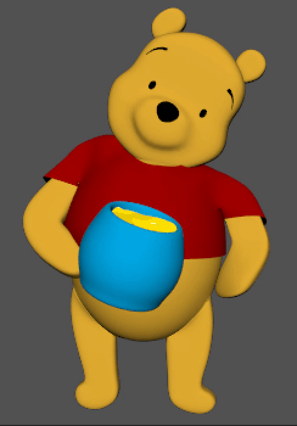

For this project, our team implemented a GLSL water shader in a cel-shaded style. Our initial goal was to create a shader that matches the flat shading style of a 3D animated short film that our group is a part of. We ended up creating the shader to be compatible with Maya with an OGSFX file format. We were able to get the parameters of wave height, transparency, color, and wave speed working with Maya’s user interface. This allows easy adjustment of the shader to fit the user’s needs. Next, we implemented one of two ideas for achieving the cel-shaded look. The first choice was to create our own custom texture that we would map onto a plane and animate with bump/displacement maps. The second plan did not require us to make a texture, but instead start with the geometry as a base diffuse color. Going with the second plan, we picked cutoffs for darker and lighter colors based on wave height for an ever-changing cel-shaded look. Our final goal of implementing water ripples was a bit trickier. It involved the layering of two different fragment shader files, since we wanted the ripples to lie on top of the existing shader. To wrap up the project, we built some scenes in Maya to demonstrate how the shader can be used.
Technical Approach
Our approach began by looking into different shader examples online. We were greatly inspired by a Unity project that included ripples on top of the base shader, so from the start ripples were something we definitely wanted to include. Since we wanted to make a shader that could be used in animated short films, we looked into how GLSL is used in Maya. The GLSL shaders in Maya are defined using an OGSFX file format. The vertex and fragment files can either be written straight into the OGSFX file or added using an #include tag. Our project was heavily inspired by Maya’s built in water_simulation.ogsfx shader, as we used that as a source of inspiration for understanding OGSFX and certain calculations such as the animation of the waves. The original Maya water shader included the frag and vert files within the OGSFX file, however, in our implementation we decided to compose the other files separately since that was what we were more familiar with from the GLSL portion of project 4. Additionally, we decided to separate the vert and frag files since we knew we would be needing two frag files: one for the base water and one for the ripples. Another element we noticed during our research phase was that most of the shaders had parameters that could be toggled, so we knew we wanted to include that feature in our own shader. For example, we added UI elements for Wave Speed, Wave Amplitude, Cutoff Size, and Transparency. Furthermore, the built in Maya shader utilized the position of the camera to calculate color cutoffs, however, for our implementation, we wanted to change this calculation as it would often result in the shader looking inconsistent and difficult to artisitcally manipulate. As such, our shader has a better sense of user control as the position of the camera does not affect the final look of the shader and does not vary as much between different uses.
The first step of the base shader implementation was setting up the OGSFX file from an existing Maya shader and stripping it of its frag and vert info. For the OGSFX file, we also had to make sure we setup the correct variables for our shader: this included the variables that are needed for the UI elements or the “uniform” variables as well as the variables that needed to shared between the fragment and vertex shaders. Next, we set up our own vertex and fragment files that would actually affect the colors and animation of our shader. We started with the basic diffuse color as a medium blue in the fragment file. Next we picked color boundaries based on a height map we found online. We began with just two colors for our cutoff heights: the diffuse and the specular. The specular was defined by the wave amplitude and the cutoff size, which we outlined as parameters that could be toggled in the UI. Thus, the cutoffs can be customized by the user. Below is an example of an early iteration of the two-color shader with the base Maya animation.
|  |
Next, we added the dark color (lower cutoff), which is defined by the wave amplitude and cutoff size, but scaled by a factor of -2 to account for a larger region that the diffuse color will cover. We set the resulting out color to the diffuse + specular if the water height was above the upper cutoff and diffuse + dark color if it was below the lower cutoff. We also factored in transparency, making a UI toggle for it. We constrained the value of transparency between 0 and 1 using the built-in GLSL clamp function. Below is our result after adding in the dark color.
|  |
Using the online Maya documentation, we learned how to toggle different features of the shader. We defined the UI widget, name, and group for each feature. Below is an example of the code format.
|  |
string UIGroup = "Diffuse";
string UIName = "Diffuse Color";
string UIWidget = "ColorPicker";
int UIOrder = 203;
= {0.0f, 0.5f, 1.0f };
|

|

|
For the ripples, we started out by following the implementation of this Unity resource: real-time water shader. We simplified elements a bit, but followed his same process. We created a custom ripple texture in photoshop with a black background. An issue that we ran into during this step was having a transparent background for the ripple texture. The texture only picked up the white color, but it became warped around the entire cube. We got around this by creating a black background and querying if the color at the current coordinate was black when mapping the texture. If so, we set the alpha to be transparent. After the texture was successfully mapped onto the cube, we began to animate it in a similar fashion as the base water. We took the code we used in earlier parts of the projects and applied it to the ripple texture so that the ripples could move in a similar method as the water. We originally ran into a problem where the ripples would move in a different speed and direction than the water. To fix this, we had to introduce a parameter called Ripple Speed that would affect the speed of the ripples independently from the water. To fix the direction of the ripples, we realized that we had to use xy coordinates instead of the xz coordinates we used for the water. Finally, we combined the water and ripple fragment files into our main method or technique in the OGSFX file. At this point, we realized that OGSFX files can have different techniques that essentially tell the shader which frag files to include during its implementation. With this, we wrote a technique for just the water, a technique for the ripples, and one that combined the two. With that, we had the final form of our cel-shaded water shader.
|  |
Results and Reflections
After working on our custom shader, we can definitely say that we’ve learned a great deal about scripting through Maya as well as coding in GLSL and OGSFX formats. It took some time for us to understand how these two languages communicate and interact with each other in terms of their variables, inputs, and outputs. However, after some time, the three of us were able to get a better idea on how to script through these languages. The three of us work heavily in Maya very often, so this project provided an amazing opportunity to see how Maya works “under the hood.” Additionally, it was incredible to see that we as 3D Artists also have the knowledge and capability to create beautiful work through coding and scripting as well as modeling and animation. If we had more time, we would have liked to implement our ripples to work with object interactions. However, we are all very proud of the end product that we have as it follows closely to the original goal that we set for ourselves.
|

|

|
|

|
Here is our video .
References
Our Water Shader was heavily inspired by Maya’s Water Simulation GLSL shader. This is where we got the source code for understanding Maya’s UI as well as Scripting Custom Shaders in Maya through GLSL and OGSFX files. We also borrowed elements from Maya’s shader to calculate factors such as the water animation and use of wave amplitude and speed. We took aspects of GLSL coding that we learned from Project 4 and applied it to Maya’s UI. To add the Ripple Effects we looked at this example that was created in Unity.
Team Member Contributions
Abby: I was really excited about doing this project, since it is so related to the style of the short film that we’ve been working on. I implemented a few of the UI features and helped with researching the ripple implementation. I looked into the Unity project that we found and formulated a plan for the ripples from there. I assisted with converting the code to the OGSFX file format at the beginning of the project, as well. Modeling the Pooh and honey jar scene in Maya, I helped showcase a practical use of our shader. I created all of our ripple textures in photoshop during the final stage of the project. For the checkpoint, I made our video to showcase our progress. I also created the slideshow for our final presentation.
Ashna: This project initially scared me a lot as I am not very used to doing computer science projects without a specific structure. As such, it took me a while to become fully comfortable and competent with the project as well as get used to the OGSFX and GLSL file formats. However, with the help of my teammates and with some time, I was able to better understand how OGSFX files are connected to vert and frag files and how they are then inputted into Maya. Throughout our project I did a lot of debugging between these three files and figured out the reasons why Maya would often error with certain commands or syntax missteps. Additionally, I helped debug problems with the ripple texture when it came to the direction and speed of the ripples. Finally, I helped a lot with the presentation and write up for both the milestone as well as the final submission.